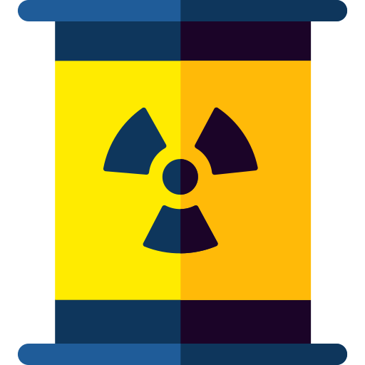
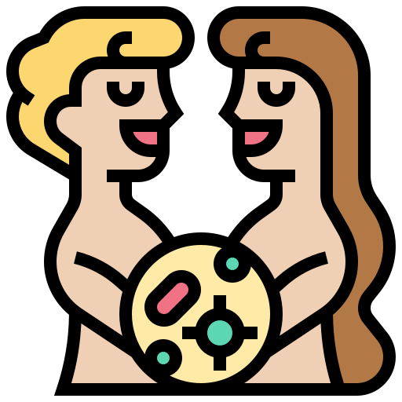
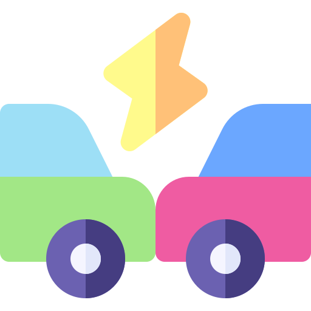

objetivos principais

maternidade
Até 2030, reduzir a taxa de mortalidade materna global para menos de 70 mortes por 100.000 nascidos vivos

Produtos Quimicos
Até 2030, reduzir substancialmente o número de mortes e doenças por produtos químicos perigosos, contaminação e poluição do ar e água do solo

doenca-transmitida-sexual
Até 2030, assegurar o acesso universal aos serviços de saúde sexual e reprodutiva, incluindo o planejamento familiar, informação e educação, bem como a integração da saúde reprodutiva em estratégias e programas nacionais

Acidente
Até 2020, reduzir pela metade as mortes e os ferimentos globais por acidentes em estradas